Interface utilisateur et navigation¶
Ethos peut être piloté entièrement à l'aide de l'encodeur rotatif de
droite (tourner pour déplacer la sélection, appuyer pour ENT) et de la
touche RTN pour quitter un menu — l'écran tactile, lorsqu'il est présent,
n'est qu'un raccourci pour les mêmes actions, et non une manière de
travailler distincte. MDL, DISP et SYS conduisent directement à la
Configuration du modèle, à Configurer les écrans et à la Configuration du
système respectivement (les trois mêmes tuiles que celles de la barre
inférieure) ; un appui long sur RTN depuis n'importe quel endroit ramène
directement à l'écran d'accueil.
Le menu de réinitialisation¶
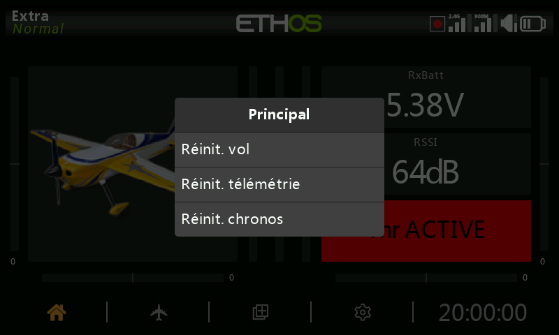
Un appui long sur ENT depuis l'écran d'accueil ouvre un menu de
réinitialisation :
- Réinitialiser le vol — réinitialise la télémétrie, les chronos et les interrupteurs de fonction, et relance la liste de vérification d'avant vol.
- Réinitialiser la télémétrie — réinitialise uniquement la télémétrie.
- Réinitialiser les chronos — réinitialise uniquement les chronos.
- Verrouiller l'écran tactile — également accessible en appuyant
simultanément sur
ENT+PAGEpendant une seconde depuis l'écran d'accueil, ou comme déclencheur d'une fonction spéciale.
Commandes d'édition¶
Ajout d'éléments fonctionnels — un chronomètre, un interrupteur
logique, une fonction spéciale, une courbe ou une variable se crée en
touchant le + situé à côté des en-têtes de colonnes du menu concerné.
Sur une radio sans écran tactile, sélectionnez un élément existant, appuyez
sur ENT et choisissez Ajouter dans le menu — cette option est
également disponible sur les radios tactiles.
Clavier virtuel¶
Toucher un champ de texte (ou appuyer sur ENT lorsqu'il est sélectionné)
ouvre le clavier à l'écran. La touche retour arrière efface à gauche du
curseur ; PAGE supprime à droite et, une fois le curseur arrivé à la fin
du texte, poursuit la suppression à partir de la gauche. Toucher le champ
lui-même déplace le curseur à cette position — ou utilisez SYS/DISP
pour le déplacer vers la gauche/la droite sans le tactile. La touche
?123/abc active le pavé numérique (qui contient également les
caractères spéciaux) :
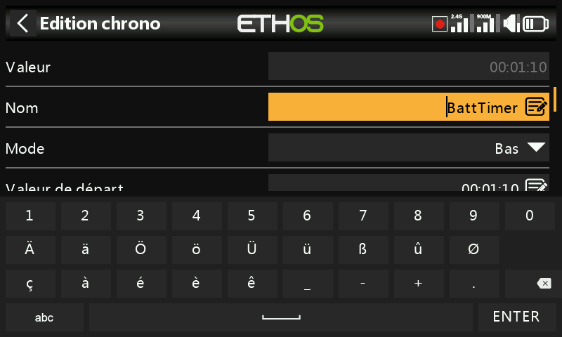
Sur une radio sans écran tactile, un appui sur ENT dans un champ de
texte active directement le mode édition : tournez l'encodeur pour faire
défiler les minuscules, les majuscules, les chiffres, puis les caractères
spéciaux, en appuyant sur ENT pour insérer chacun d'eux. MDL bascule la
casse du caractère situé immédiatement à droite du curseur (et tous les
caractères saisis ensuite conservent cette casse jusqu'à une nouvelle
bascule). PAGE supprime à droite du curseur ; SYS/DISP le déplacent
vers la gauche/la droite.
Commandes de saisie des valeurs numériques¶
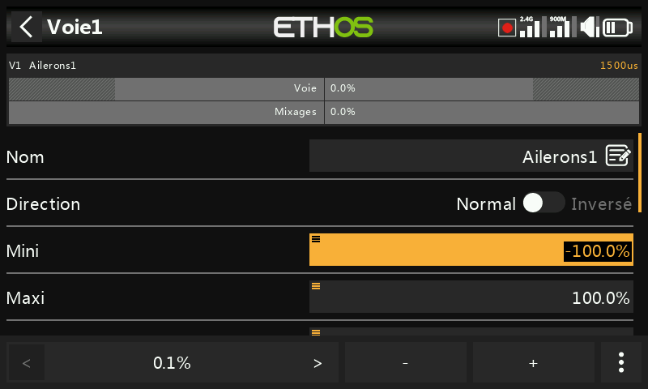
Toucher un champ numérique ouvre une barre de commandes en bas de l'écran :
</> modifient le pas d'incrémentation (en passant d'une décade
à l'autre — par exemple 0,01/0,1/1,0/10,0), -/+ (ou l'encodeur
rotatif) ajustent la valeur de ce pas, et Plus ouvre d'autres options :
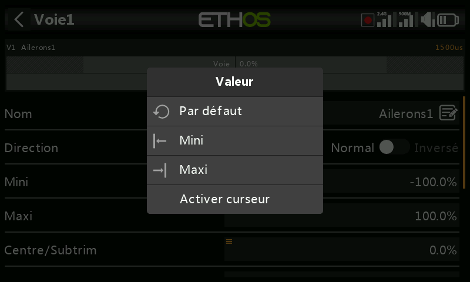
- Revenir à la valeur par défaut du champ
- Régler au minimum / régler au maximum
- Remplacer l'incrémenteur par un curseur
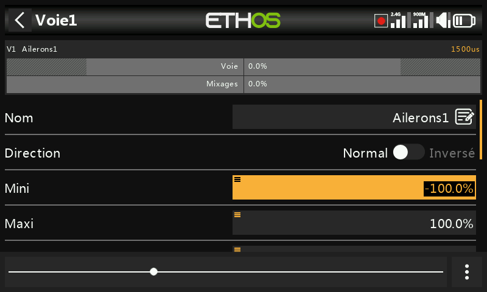
Le curseur (également réglable avec l'encodeur rotatif) est plus rapide pour les modifications grossières ; Désactiver le curseur rétablit l'incrémenteur. Les valeurs de plage de télémétrie se modifient de la même manière :
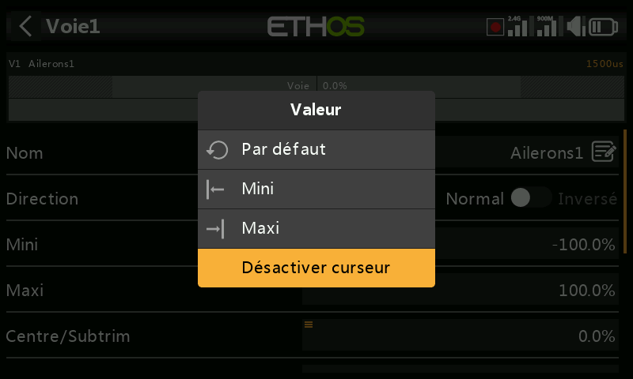
La fonction Options¶
Presque partout où une valeur ou une source est
attendue, un appui long sur ENT ouvre une boîte de dialogue Options —
la présence d'une petite icône de menu (« hamburger ») dans le coin
supérieur gauche d'un champ indique qu'elle est disponible.
Options de valeur¶
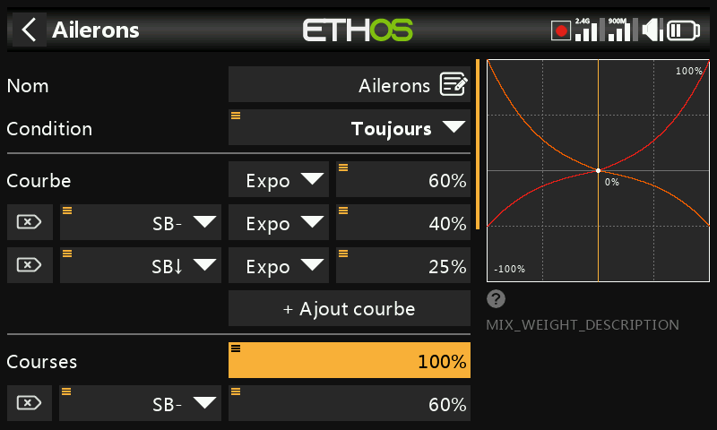
La boîte de dialogue des options de valeur indique le paramètre en cours d'édition et propose de choisir entre un minimum/maximum fixe ou son pilotage par une source (par exemple un potentiomètre, afin d'ajuster la valeur en vol). Si le champ utilise déjà une source, le même appui long propose à la place de convertir la valeur actuelle de cette source en valeur fixe :
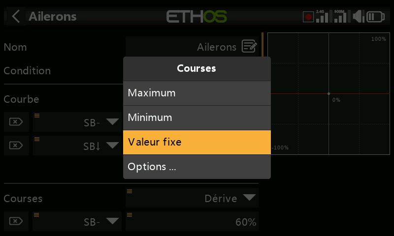
Choix d'une source¶
Sélectionner Choisir une source ouvre un sélecteur à deux colonnes — d'abord une catégorie (analogiques, interrupteurs, interrupteurs logiques, trims, voies, un axe gyroscopique, une voie d'écolage, un chronomètre, un capteur de télémétrie ou quelques valeurs spéciales), puis l'élément précis de celle-ci :
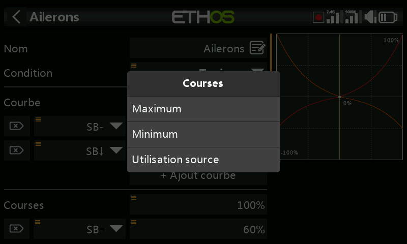
Une fois la source définie, le même appui long ouvre des options propres au type de source concerné :
Toute source —
- Inverser — inverse la source (par exemple active lorsqu'un interrupteur n'est pas en position haute, au lieu de l'être lorsqu'il l'est).
- Front — se déclenche une seule fois lors d'une transition
(faux→vrai ou vrai→faux) plutôt que de rester actif pendant tout l'état ;
signalé par un préfixe
†sur la source. Disponible sur les interrupteurs en général, et plus particulièrement sur la condition de déclenchement de l'interrupteur logique Sticky.
Sources de type manche — options de type calibration/subtrim :
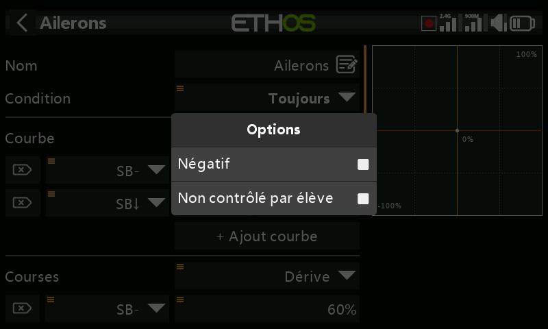
Sources de type interrupteur —
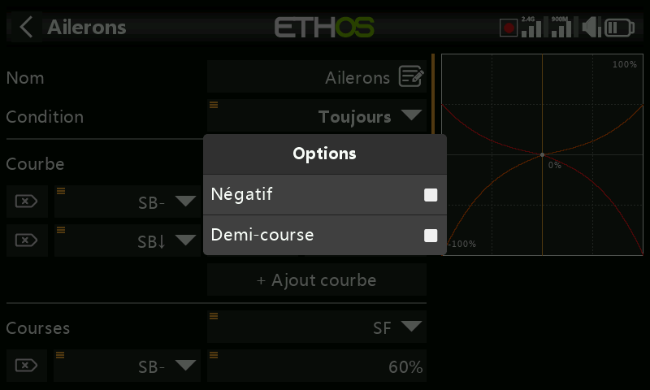
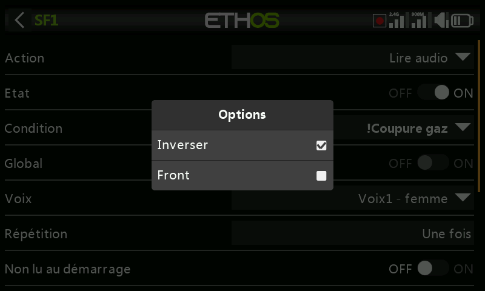
- Négatif — inverse l'action de l'interrupteur.
- HalfRange — pour un interrupteur à 2 positions ou un interrupteur logique, modifie sa plage de sortie de ±100 % à 0–100 %.
Sources de type trim —
- Négatif — inverse l'action du trim (utile dans les Actions d'un mixage libre).
- Plage complète — les trims sont par défaut de ±25 % ; en tant que source, cette plage peut être élargie à ±100 %.
- Ignorer l'entrée écolage — sur un interrupteur logique, exclut les mouvements provenant de l'entrée écolage du déclenchement de l'interrupteur. Utilisation typique : détecter le mouvement des manches du maître d'écolage (par exemple pour intervenir instantanément si l'élève fait une erreur) sans que les commandes de l'élève le déclenchent également.
Sources de type variable —
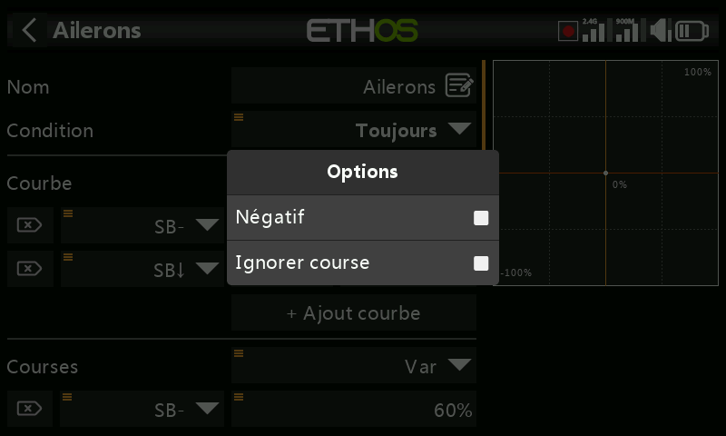
- Négatif — inverse la valeur de la variable pour cet usage.
- Ignorer la plage — certains champs ont des plages asymétriques (par exemple Min/Max des Sorties, qui vont respectivement de −150 à 0 % et de 0 à 150 %). À moins qu'une variable utilisée comme source de ce champ ait une plage identique, activez cette option pour contourner la conversion automatique de plage d'Ethos et éviter des valeurs inattendues.
Sources de type capteur de télémétrie — réduire la source à son minimum ou son maximum en cours d'utilisation au lieu de la lecture instantanée (certains capteurs proposent en outre des options qui leur sont propres) :
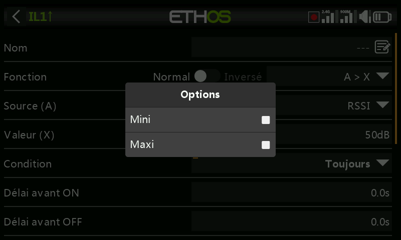
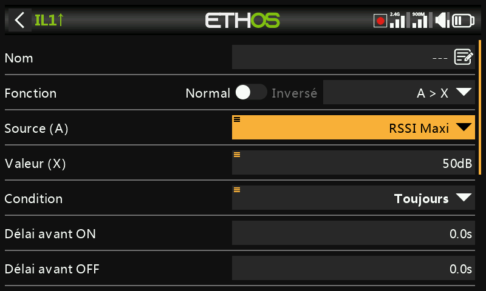